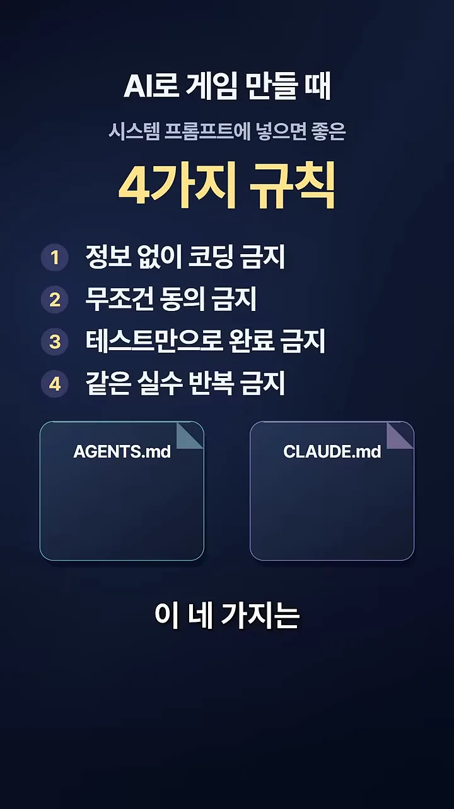
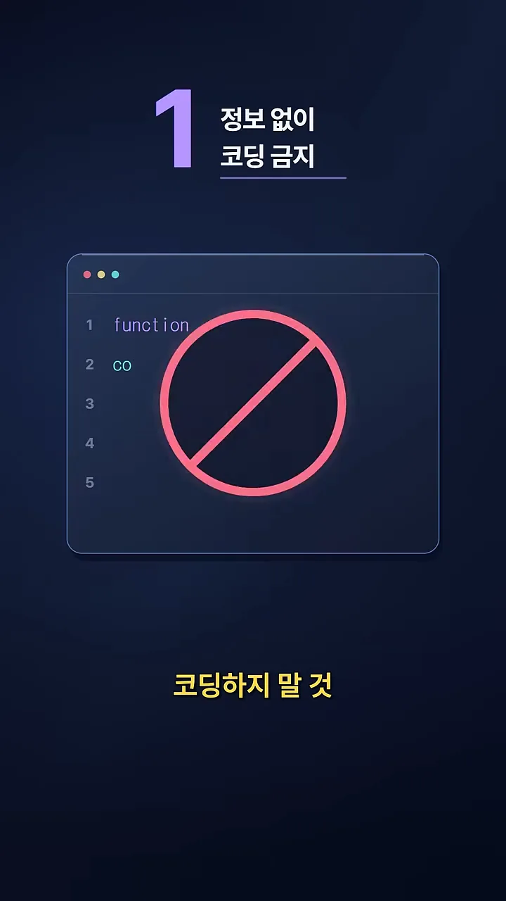
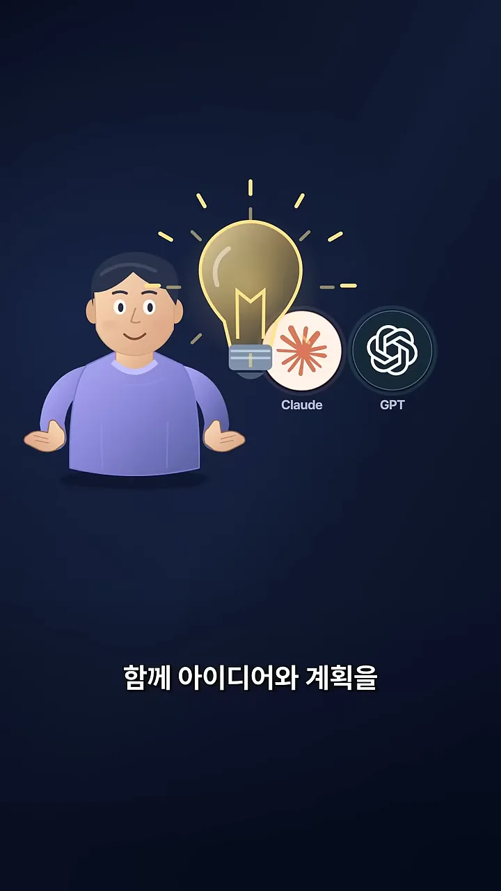
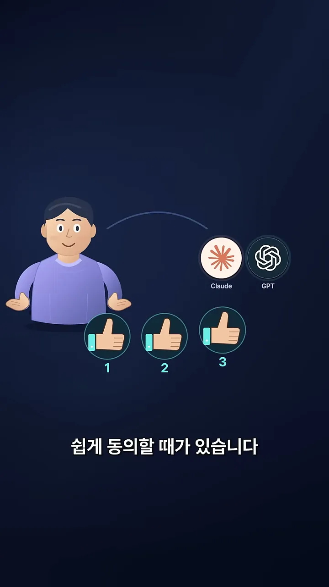
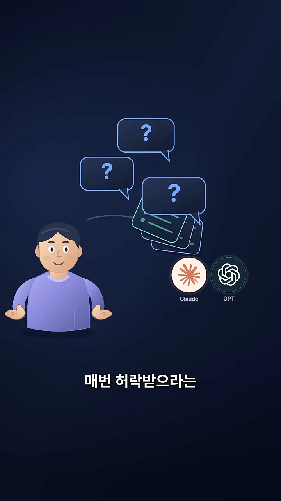
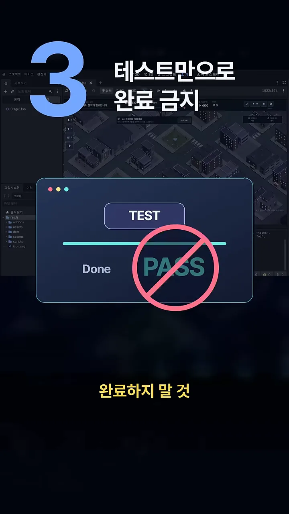
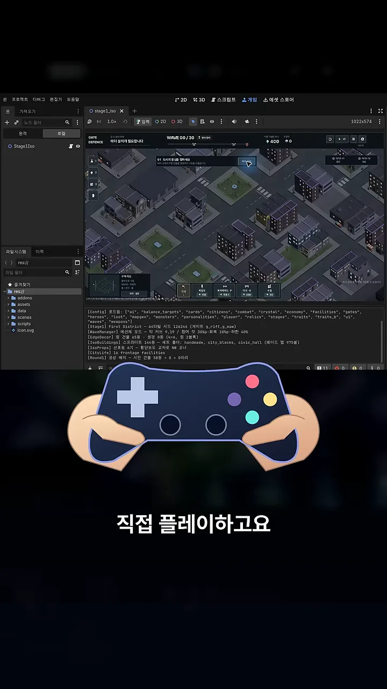
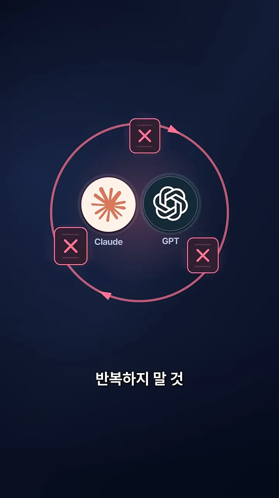
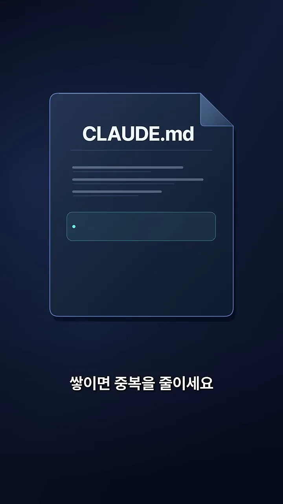

코딩 전에: 묻고, 계획부터
영상은 첫 화면에서 네 규칙을 한꺼번에 보여 줘요. 위에는 '시스템 프롬프트에 넣으면 좋은 4가지 규칙'이라는 제목이, 가운데에는 번호 붙은 규칙 네 줄이 있어요. 맨 아래 두 문서 아이콘이 규칙을 넣을 곳인 AGENTS.md와 CLAUDE.md예요.

규칙 네 개는 작업 순서에 따라 놓아 보면 기억하기 쉬워요. 계획할 때 하나, 구현 직전에 하나, 다 만든 뒤에 하나, 그리고 다음 작업으로 넘어가기 전에 하나예요.
규칙 1: 정보 없이 코딩하지 않기
첫 번째 규칙 화면은 코드 편집기 위에 커다란 금지 표시를 그렸어요. function까지 치다 멈춘 코드가 '알기 전에는 쓰지 말라'는 뜻이에요. 무엇을 만드는지, 왜 만드는지, 어떻게 동작해야 하는지 중 하나라도 흐릿하면 AI는 빈칸을 제 나름의 가정으로 채워요.

대신 영상이 권하는 순서는 이래요. AI가 먼저 질문하고, 사람과 함께 아이디어와 계획을 정리한 뒤에 구현해요. 아래 화면에서 사람 옆 전구에 Claude와 GPT(Generative Pre-trained Transformer) 아이콘이 붙어 있는 게 '같이 생각을 정리한다'는 장면이에요.

무조건 동의하지 않기
두 번째 규칙은 AI의 버릇을 겨냥해요. AI는 사용자가 뭐라고 하든 쉽게 동의할 때가 있어요. 아래 화면에서 사람이 말할 때마다 Claude와 GPT 쪽에서 엄지가 하나, 둘, 셋 올라가요. 따져 보지 않고 맞장구만 치는 모습이에요.

그래서 규칙은 '무조건 동의하지 말고, 구현 전에 문제점과 대안을 검토할 것'이에요. 영상은 바로 이어서 선을 하나 그어요. 아래 화면처럼 물음표를 잔뜩 띄우며 사사건건 허락을 받으라는 뜻은 아니라는 거예요.

정리하면 두 규칙이 짝을 이뤄요. 규칙 1은 모르면 물어보라는 쪽이고, 규칙 2는 들은 걸 그대로 받아들이지 말라는 쪽이에요. 둘 다 구현에 들어가기 전에 걸러 내는 장치예요.
끝까지 확인하고, 배운 점은 파일에
규칙 3: 테스트 통과만으로 끝내지 않기
세 번째 규칙 화면은 'TEST' 막대가 끝까지 찬 창에 'Done'과 'PASS'가 떠 있고, 그 위에 금지 표시가 있어요. 뒤에는 게임 엔진 편집기가 깔려 있어요. 왼쪽 파일 목록에 res:// 경로와 scenes, scripts 폴더가 보여서 Godot 편집기로 보여요.

게임은 테스트가 다 통과해도 화면이 깨지거나 조작감이 이상할 수 있어요. 그래서 AI가 게임을 직접 실행해서 화면과 동작을 할 수 있는 만큼 확인하게 하라고 해요. 아래 화면에서 편집기 아래 게임패드를 쥔 손이 '필요하면 사람이 직접 플레이한다'는 부분이에요.

규칙 4: 같은 실수 반복하지 않기
마지막 규칙 화면은 Claude와 GPT를 빨간 원이 감싸고, 원 위에 X 표시가 세 번 붙어 있어요. 같은 실수가 빙빙 도는 모습이에요.

방법은 간단해요. 작업하며 배운 점을 AGENTS.md나 CLAUDE.md에 한 줄씩 남겨요. 아래 화면의 CLAUDE.md 문서에 새 줄이 하나 추가되는 장면이에요. 줄이 쌓이면 겹치는 내용을 줄여서 파일을 가볍게 유지해요.

네 규칙 한눈에
규칙 파일에 옮겨 적기 좋게 영상의 네 규칙을 표로 모았어요.
| 규칙 | 하지 말 것 | 대신 할 것 |
|---|---|---|
| 1. 정보 없이 코딩 금지 | 무엇을, 왜, 어떻게가 불분명한데 임의로 가정하고 코딩 | 먼저 질문하고 아이디어와 계획을 함께 정리한 뒤 구현 |
| 2. 무조건 동의 금지 | 사용자 의견에 바로 맞장구 | 구현 전에 문제점과 대안을 검토 (매번 허락받을 필요는 없음) |
| 3. 테스트만으로 완료 금지 | 기본 테스트 통과로 완료 처리 | 게임을 직접 실행해 화면과 동작 확인, 필요하면 사람이 플레이 |
| 4. 같은 실수 반복 금지 | 배운 점을 흘려보냄 | 규칙 파일에 한 줄씩 남기고, 쌓이면 중복 정리 |